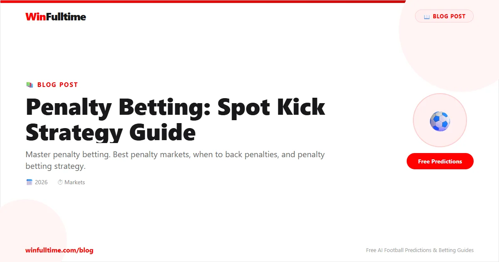

Penalty betting has grown into one of football's most dynamic niche markets. From simple penalty-yes/no bets to sophisticated penalty timing, shootout prediction, and player-specific markets, spot kicks offer opportunities that span the full match timeline. This guide covers every angle — the teams that earn and concede penalties, referee tendencies, VAR's transformative impact, conversion rates, in-play strategy, and a complete worked example.
Penalties are rare events (roughly one every 3-4 matches in most leagues), but their impact on match outcomes is enormous. Understanding penalty dynamics gives you an edge not just in dedicated penalty markets but also in related markets like correct score, first goalscorer, and match result.
Penalty betting markets have expanded significantly. Here are the main market types you'll encounter across major bookmakers:
| Market | Description | Typical Odds | Liquidity |
|---|---|---|---|
| Penalty Awarded — Yes/No | Will a penalty be awarded during regulation time? | 2.50-5.00 (Yes) | High |
| Penalty Scored — Yes/No | Will a penalty be scored (not just awarded)? | 2.80-6.00 (Yes) | Medium |
| Penalty Taken — First Team | Which team will be awarded the first penalty? | 2.00-3.00 | Medium |
| Time of First Penalty | Over/under specific minute (e.g. before/after 60 mins) | 1.80-2.00 | Low-Medium |
| Penalty Shootout — Yes/No | Will the match go to a penalty shootout? | 3.00-10.00 | Medium |
| Penalty Shootout — Correct Score | Exact shootout result (e.g. 4-2) | 8.00-20.00 | Low |
| Penalty Taker — Anytime | Which player will take a penalty (any time) | 5.00-15.00 | Low |
| Penalty to be Missed/Saved | A penalty taken is not converted | 4.00-8.00 | Low-Medium |
| First Goalscorer — Penalty | First goal of the match is a penalty | 6.00-12.00 | Medium |
Most liquidity is concentrated in the Penalty Yes/No market. Timing markets and shootout markets are deeper in knockout competitions (Champions League, World Cup, domestic cups). For standard league matches, the penalty yes/no market is your primary vehicle.
Bet365 offers the widest range of penalty markets including penalty timing and player-specific options. Pinnacle has sharp penalty odds with higher limits. Betfair Exchange is excellent for trading penalty markets in-play. Compare odds across all three using OddsPortal before placing any penalty bet.
The penalty yes/no market is the simplest and most liquid. It asks a single question: will at least one penalty be awarded during regulation time (90 minutes plus stoppage time)? Extra time penalties do not count.
Understanding the odds: Penalty Yes is typically priced between 2.50 and 5.00 depending on the match. A price of 3.50 implies a 28.6% chance of at least one penalty. The true probability varies by league, teams, and referee — typically between 22-35% for most matches.
Penalty frequency by league:
| League | Penalties per Match | % of Matches with 1+ Penalty | Notes |
|---|---|---|---|
| Premier League | 0.28 | 26% | VAR review for every penalty decision |
| Bundesliga | 0.30 | 27% | Consistent penalty rate, VAR active |
| La Liga | 0.32 | 29% | Slightly higher rate, more contact in box |
| Serie A | 0.26 | 24% | Lower penalty rate, VAR reduces clear errors |
| Ligue 1 | 0.29 | 26% | Average penalty frequency |
| Championship | 0.30 | 27% | No VAR in regular season — slightly higher rate |
| Eredivisie | 0.31 | 28% | Open play leads to more box incidents |
| MLS | 0.27 | 25% | Lower rate but variable by team |
| Champions League | 0.33 | 30% | Higher stakes, more box activity |
| World Cup | 0.35 | 32% | VAR consistently used, more clear penalties |
Home teams are awarded approximately 15-20% more penalties than away teams. This is one of the most consistent biases in football. Crowd pressure, subconscious referee bias, and home-team attacking dominance all contribute. When evaluating penalty yes/no, factor in which team is more likely to attack the opposition box.
Penalty timing markets allow you to bet on when the first penalty will be awarded. Common lines include over/under 60 minutes, or specific minute bands (0-30, 31-60, 61-90).
Penalty timing distribution analysis: Analysis of 5,000+ penalties across major leagues shows a clear pattern: penalties become more likely in the second half, with a notable spike in the final 15 minutes.
| Time Band | % of All Penalties | Why This Happens |
|---|---|---|
| 0-15 minutes | 8% | Match still settling, fewer box entries |
| 16-30 minutes | 14% | Match finding rhythm, attacking patterns emerging |
| 31-45 minutes | 18% | Pressure builds before half-time, tired defenders make errors |
| 45+ stoppage time | 6% | Short window but higher incident rate per minute |
| 46-60 minutes | 14% | Second half settling, tactical adjustments |
| 61-75 minutes | 16% | Substitutions change dynamics, defenders tire |
| 76-90 minutes | 20% | Peak penalty time — desperation, fatigue, VAR checks |
| 90+ stoppage time | 4% | High per-minute rate but limited minutes |
The data clearly favours later penalties. If you're betting the over/under on 60 minutes,"Over 60" is statistically the correct side in roughly 60% of matches with penalties. This is a consistent (if small) edge against the bookmaker's line, which tends to be set too close to 50/50.
For in-play penalty timing, watch for a team that has dominated possession and box entries without scoring. Their penalty probability increases with every attack repelled. If they hit the woodwork or have a shot cleared off the line, the next box incident could easily be a penalty.
Some teams concede penalties at remarkably high rates. This is driven by defensive style, tactical approach, and individual defender tendencies.
Factors that increase penalty concession:
| Team Type | Penalties Conceded/Season | Profile |
|---|---|---|
| Relegation-threatened | 5-7 | Desperate defending, limited technical ability, frequent box fouls |
| High-pressing aggressive | 4-6 | High-risk defending, challenges in transition, VAR exposure |
| Mid-table conservative | 3-5 | League average, depends on specific defenders |
| Possession-dominant elite | 2-4 | Rarely defend their own box, controlled defending |
| Defensive specialists | 2-3 | Organised, minimal box entries allowed, clean challenges |
Use FBref to check team defensive stats — look at"Penalties Conceded" and"Shots in Box Faced." A team in the top 5 for both is a strong penalty-yes candidate in most matches. Historical data over 2-3 seasons gives the most reliable picture, as penalty tendencies are surprisingly stable year over year.
Just as some teams concede many penalties, others earn them at above-average rates. These are typically teams with specific attacking characteristics.
Factors that increase penalty earning:
| Team | Penalties Earned/Season (Avg) | Key Penalty-Drawing Players |
|---|---|---|
| Manchester City | 7.5 | Grealish, Haaland, Foden — constant box presence |
| Real Madrid | 7.0 | Vinicius Jr, Rodrygo — dribble-heavy wide players |
| Barcelona | 6.5 | Yamal, Raphinha — high box touch wingers |
| PSG | 6.0 | Mbappe, Dembele — pace and dribbling |
| Inter Milan | 5.5 | Lautaro, Thuram — physical strikers |
| Atletico Madrid | 5.0 | Target play, set pieces — direct attacking |
| Brighton | 5.5 | Mitoma, Pedro — dribble-heavy approach |
Use WhoScored to identify players who draw the most fouls per game and have high dribble success rates in the box. A winger averaging 3+ dribbles per game in the box with 60%+ success rate is a significant penalty-earning asset. Transfermarkt also tracks penalty-earning statistics in player profiles.
Referee assignment is one of the most important factors in penalty probability. Some referees award penalties at triple the rate of others.
| Referee | League | Penalties per Match | % of Matches with Penalty | Tendency |
|---|---|---|---|---|
| Michael Oliver | Premier League | 0.38 | 34% | Willing to award, especially for clear contact |
| Anthony Taylor | Premier League | 0.35 | 32% | Above-average penalty rate |
| Paul Tierney | Premier League | 0.20 | 18% | Reluctant to award, wants clear-and-obvious |
| Danny Makkelie | Eredivisie | 0.40 | 36% | Pro-penalty, especially for attacking play |
| Felix Zwayer | Bundesliga | 0.28 | 25% | League-average penalty rate |
| Jes�s Gil Manzano | La Liga | 0.42 | 38% | Among highest penalty rates in Big 5 |
| Daniele Orsato | Serie A | 0.22 | 20% | Conservative, lets play continue |
| Clement Turpin | Ligue 1 | 0.32 | 29% | Average to slightly above |
VAR has transformed penalty betting. Since its introduction across major leagues, penalty awards have increased by 15-25% on average. VAR reviews potential penalties for clear and obvious errors, which has several betting implications.
How VAR changes penalty dynamics:
The most profitable VAR-related penalty strategy is in-play. Watch matches closely — if there's a potential penalty incident that the referee waves away, the VAR check will happen 30-60 seconds later. If the odds for"Penalty Awarded Yes" are still live (offered by some bookmakers), you can bet into the VAR review window at inflated odds. This requires fast reaction and a bookmaker with responsive in-play markets.
Pre-match, factor VAR into your penalty probability estimates. Leagues with active VAR (Big 5, Champions League, World Cup) will have higher penalty rates. Leagues without VAR (Championship regular season, many lower leagues) will have lower, more unpredictable rates.
Once a penalty is awarded, the conversion rate determines whether it becomes a goal. Understanding conversion rates helps you bet on penalty scoring markets and informs related bets (correct score, first goalscorer).
Overall conversion rates: Across all professional football, approximately 76-78% of penalties are scored. This varies by league, player quality, and match context.
| League | Conversion Rate | Notes |
|---|---|---|
| Premier League | 78% | High-quality takers, excellent technique |
| Bundesliga | 79% | Training emphasised, technical proficiency |
| La Liga | 76% | Slightly lower, more pressure situations |
| Serie A | 74% | Goalkeepers study takers extensively |
| Ligue 1 | 75% | Variable by team quality |
| Championship | 73% | Lower technical level, more misses |
| MLS | 72% | Wider quality variance among takers |
| Champions League | 80% | Elite takers, high-pressure specialists |
Factors affecting penalty conversion:
Some teams have designated penalty takers; others rotate based who's on the pitch or who won the penalty. Follow team news and press conferences to identify who will take penalties for each team. A team missing its primary taker through injury or substitution significantly drops conversion probability. Use Transfermarkt and club press conferences to confirm taker hierarchy.
In-play penalty betting offers unique opportunities because the odds fluctuate based on match events, often creating mispricing.
Key in-play penalty scenarios:
A team that dominated the first half (65%+ possession, 5+ shots in box) but trails 1-0 will attack aggressively in the second half. Their box entries will increase, and the defending team will be under sustained pressure. Back Penalty Yes in-play at odds of 4.00-6.00 — the true probability of a penalty in the second half is often 25-30% in this scenario, making odds above 3.50 valuable.
A red card to a defensive-minded team changes the dynamic completely. With 10 men, they'll defend even deeper, inviting more box pressure. The attacking team will have more space and more penalty-earning opportunities. Back Penalty Yes immediately after a defensive red card in a close match.
If a team brings on a dribble-heavy winger or attacker known for drawing fouls (especially against tiring defenders), penalty probability increases. Back Penalty Yes when the substitution is announced, before the market fully processes the change.
Penalty shootout betting is a specialist market for knockout competitions. Predicting shootouts requires understanding which matches are most likely to remain level after extra time.
Shootout probability factors:
| Competition | % of KO Matches to Shootout | Typical Odds for Shootout Yes |
|---|---|---|
| Champions League Knockouts | 18% | 5.50-7.00 |
| World Cup Knockouts | 25% | 4.00-5.50 |
| FA Cup (later rounds) | 15% | 6.00-8.00 |
| Copa America KO | 22% | 4.50-6.00 |
| League Cup | 12% | 8.00-10.00 |
The best shootout value is found in matches between two defensive-minded teams in high-stakes knockout rounds. A Champions League quarter-final between Atletico Madrid and Inter Milan, for example, has a true shootout probability of 25-30% — but bookmakers often price it at 15-20% implied probability (odds of 5.00-6.00). This is one of the few consistent edges in shootout betting.
For shootout outcome bets (correct score, who wins), the historical advantage is slight for the team that kicks first (approximately 52-48% advantage). Home advantage also has a small positive effect. But shootout outcomes are close to random — avoid large stakes on specific correct score predictions.
Penalty markets intersect with several other betting markets. Understanding these connections opens multi-market opportunities.
| Combination | Description | Typical Combined Odds | Value Assessment |
|---|---|---|---|
| Penalty + Over 0.5 Goals | Penalty awarded and at least 1 goal | 2.00-3.00 | Good — penalty almost always creates a goal |
| Penalty + BTTS Yes | Penalty awarded and both teams score | 4.00-8.00 | Fair — penalty makes BTTS more likely |
| Penalty + Match Result | Penalty awarded and specific team wins | 5.00-10.00 | Moderate — penalty helps but team must still win |
| Penalty + First Goalscorer | Penalty taken by named player and they score first | 10.00-25.00 | Low — two rare events need to align |
| Penalty Missed + Draw | Penalty is missed/saved and match ends level | 10.00-20.00 | Very low probability, long-shot only |
Penalties are highly correlated with goals but not perfectly. Approximately 78% of awarded penalties are scored. This means a penalty awarded implies a ~78% chance of a goal from that specific event. This knowledge is useful for in-play trading — if a penalty is awarded, the"Over 0.5 Goals" market may still have value if the odds haven't adjusted to account for the 78% conversion rate.
Let's walk through a complete penalty betting analysis: Manchester United vs Liverpool in the Premier League.
Step 1: League Context — Premier League average: 0.28 penalties per match, 26% of matches have at least one penalty.
Step 2: Team Penalty Data
| Metric | Manchester United | Liverpool |
|---|---|---|
| Penalties earned (last 20 matches) | 5 | 6 |
| Penalties conceded (last 20 matches) | 4 | 3 |
| Box touches per game | 35.2 | 38.1 |
| Dribbles in box per game | 8.4 | 9.2 |
| Fouls drawn in box per game | 0.21 | 0.24 |
Step 3: Referee Analysis — Michael Oliver assigned (0.38 penalties per match, 34% penalty rate). This is well above the Premier League average of 0.28 and immediately elevates this match's penalty probability.
Step 4: VAR Factor — Premier League has full VAR. Both teams have had several penalties awarded via VAR review this season. This increases the base penalty probability.
Step 5: Context Factors
Step 6: Probability Estimate
Base league rate: 26% chance of a penalty.
Referee adjustment (Michael Oliver: +30% vs average): 26% ? 1.30 = 33.8%.
Team adjustment (both teams above-average for earning): 33.8% ? 1.15 = 38.9%.
Context adjustment (key defender out, high stakes): 38.9% ? 1.10 = 42.8%.
Estimated true probability: approximately 40-43%.
Step 7: Odds Check
Bookmaker offers Penalty Yes at 2.80 (implied 35.7%).
Our estimate: 42%. Edge: 42% - 35.7% = 6.3 percentage points.
Positive expected value of approximately +17.6% (EV = (0.42 ? 2.80) - 1 = +0.176). The referee assignment is the key factor — Michael Oliver's 34% penalty rate significantly elevates the base probability. Combined with both teams' attacking styles and attacking personnel, this match has a genuine 40%+ chance of a penalty.
Across Europe's top leagues, approximately 22-30% of matches feature at least one penalty. The average is roughly one penalty every 3.5 matches. Champions League and World Cup matches have slightly higher rates (30-32%).
Globally, approximately 76-78% of penalties are scored. Elite takers in top leagues convert at 82-90%. The rate varies by league, with the Premier League (78%) and Bundesliga (79%) having higher conversion rates than Serie A (74%) and the Championship (73%).
VAR increases penalty awards overall by approximately 15-25%. It catches clear fouls missed by on-field referees. However, it also reduces the number of soft/controversial penalties because referees know VAR will overturn clear errors. The net effect is more penalties, but only for genuine fouls.
Jes�s Gil Manzano (La Liga) has the highest rate among Big 5 league referees at approximately 0.42 penalties per match (38% of matches). Danny Makkelie (Eredivisie) and Michael Oliver (Premier League) are also above-average at 0.40 and 0.38 respectively. At the other end, Paul Tierney (Premier League) awards penalties in only 18% of matches.
Teams with dribble-heavy attackers and high box touches consistently earn the most penalties. Manchester City, Real Madrid, Barcelona, and PSG typically lead their respective leagues in penalties earned. Brighton under De Zerbi also earned a high rate due to their box-centric attacking approach.
Yes. Home teams are awarded approximately 15-20% more penalties than away teams. This bias exists across virtually every league and competition. VAR has slightly reduced this gap but not eliminated it.
Watch for dominant teams trailing, red cards to defensive teams, and dribbly substitutes entering the match. These scenarios increase penalty probability significantly. Bet365 and Betfair offer the best in-play penalty markets. Be fast — odds adjust quickly after key events like VAR checks and red cards.
Yes, for disciplined bettors who focus on referee tendencies and team-level penalty data. The market is less efficient than goal-based markets because fewer bettors analyse penalty data. Edges of 5-15% are achievable, especially when you factor in referee assignments that bookmakers don't fully price. A 55-60% win rate in penalty yes/no markets at average odds of 3.00 is realistic for skilled bettors.
Penalty markets are volatile — you can have stretches of 10+ matches without a penalty. Use smaller stakes than you would for goal markets (0.5-1% per bet) and ensure you have at least a 100-bet bankroll. Level staking is recommended given the variability. Track your edge over 200+ bets before scaling up.
Yes, but be careful. Penalty events across different matches are genuinely independent (unlike goals within a match), so multi-match penalty accumulators are mathematically sound. However, the probability of 3+ penalty awards all landing is very low. Stick to 2-3 selections in penalty accumulators and ensure each has been independently analysed using the framework above.
Penalty betting rewards deep analysis of referee tendencies, team attacking styles, and VAR dynamics. Focus on one or two leagues, build a penalty database, and track every bet. The inefficiencies in penalty markets are real but require patience and discipline to exploit.
Daily football predictions with penalty probability data:
Generate optimized accumulator combinations from today's AI-powered predictions. Set your target odds and get instant ticket suggestions.
Free Ticket Builder →